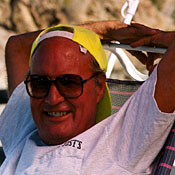

|
|||
| home : obituaries & memories : bio : quotes : photos : dadisms : art : contact | |||
 |
QUOTES PREFACE With Tom Crosby's retirement, it has been said (in the L.A. Times, no less) that our court may be losing its "most gifted writer." Words never failed Justice Crosby, but he has been equally good to them in return. More interested in conciseness and clarity than cleverness, he was utterly unmotivated by politics, hidden agendas or ideology. He ably filled the judiciary's side of the bargain in Justice Art Gilbert's "match in heaven" between good writers and readers of judicial opinions. While Tom Crosby may not have been infallible, he certainly was unflappable. Whatever he dished out, he took in return. Whether his carefully crafted, deeply felt opinions were decertified, reversed or simply ignored — whether he was the lone dissenter or the target of a blistering riposte from a justice, brief writer or talk radio host — his typical reaction was the muttered: "It'll make you crazy if you let it." And he never did. It has been our luck to work with a clear-headed, plain-speaking el jefe. Over the years, we have seen Justice Crosby edit — indeed shred our writing. It is now our supreme pleasure, finally, to edit his. Santa Ana, May 18, 2001 CROSBY VIEWS THE WORLD ART "Vincent Van Gogh wrote to his brother in May 1889 that his madness should be viewed 'as a disease like any other.' More than a century later, health care insurers still do not share this outlook." (Warner v. California Physicians Service (1998) G016812, unpublished.) "á la the goddess in Botticelli's Birth of Venus." (In re Andrew B. (1995) 40 Cal.App.4th 825, 830.) BOATING "[T]his [case] has wended its way through the criminal justice system with all the lassitude of an underpowered tramp steamer drifting through the tropics." (Maniscalco v. Superior Court (1991) 234 Cal.App.3d 346, 849.) "Had the parties not tied this appeal up to a First Amendment mooring, we might have set sail with a well-reasoned opinion from the 'Show Me state' on facts like our own." (People v. Janini (2000) 89 Cal.Rptr. 244, ordered not published.) BUSINESS CHILDREN "After school and during vacation periods, the streets, beaches, homes, and malls are crowded with unattended children. Some of them are lonely; some get hurt or killed; and many are victimized or victimize others. This is all a shame, one of the great failings of our otherwise fabulously wealthy society. . . ." (In re Kamiya (1998) G022140, unpublished.) "[A]ny institution so tolerant of teenage drinking as to allow a minor to consume some 15 beers within its premises without checking his age or alcoholic condition, cannot be heard to object when a jury balks at its ostrich-like vision." (Saliture v. Shakey's Inc. (1997) G018974, unpublished.) "[Appellant] did not receive ineffective assistance of counsel; sadly, her son had an ineffective mother." (In re Cody W. (1994) 31 Cal.App.4th 221, 233-234.) "[L]oss of one's children should not be an automatic consequence of a felony conviction" (In re David F. (1992) 12 Cal.Rptr.2d 225, 227, ordered not published.) "[The court] merely imitates the irked mother who responds 'just because' to a child questioning a parental command." (People v. Salgado (1990) 266 Cal.Rptr. 887, ordered not published.) "Although 'you send your child to the schoolmaster . . . 'tis the schoolboys who educate him.'" (dissenting in Perumal v. Saddleback Valley Unified School Dist. (1988) 198 Cal.App.3d 64, 91, fn. 15.) "[F]amilies with children are as much in need of affordable housing as adults without children, and probably more so." (Rosales v. Huntington-by-the Sea Mibilehome Park (1987) 240 Cal.Rptr. 22, ordered not published.) "Although trite, it is nonetheless apt to recall the phrase 'generation gap.' It surely exists now and probably always has." (People v. Mora (1987) 235 Cal.Rptr. 340, 348.) CLOTHING "[C]ounsel took the concept of 'sole' negligence to literal extremes . . . . [W]e know of no rule that holds 'unless the shoe is dry, you must indemnify' . . . ." (National Union Fire Ins. Co. v. Nationwide Ins. Co. (1999) 69 Cal.App.4th 709, 718 fn. 2.) "Sweat has left an ugly stain on the fabric of California law-and-motion practice." (Mediterranean Construction Co. v. State Farm Fire & Casualty Co. (1998) 66 Cal.App.4th 257, 266.) "Whatever hat the contractor may have worn, it simply did not cover an insured head." (Campobasso v. State Farm Fire & Casualty Co. (1998) G016911, unpublished.) "Attorneys wear different hats when they perform legal services on behalf of their clients and when they conduct business with them. As to the latter, the law presumes the hat they wear is a black one." (Mayhew v. Benninghoff (1997) 53 Cal.App.4th 1365, 1369.) CRIMES "[a]n elastic, but hoary, definition of 'prostitution'" (People v. Janini (2000) 89 Cal.Rptr. 244, ordered not published.) "[Defendant] was 'guilty' of only one thing — constructive possession of an ice-cold 12-pack. A sin, perhaps, in some quarters, but a far cry from the FBI's 'most wanted list.' (Huynh v. SuperiorCourt (2000) G026791, unpublished.) "The notion of criminalizing working mothers should be anathema to anyone who is seriously concerned about the increasing feminization of poverty." (In re Kamiya (1998), unpublished, G022140.) "Criminals are not constrained by municipal boundaries, nor are potential victims." (City of Huntington Beach v. City of Westminster (1997) 57 Cal.App.4th 220, 225.) "[I]t would be difficult to imagine a better example of a coerced confession short of one obtained via the rack and screw." (dissenting in People v. James M. (1996) G015778, unpublished.) "Maybe it is time to ask whether we are willing to sacrifice the Fourth Amendment to win the War on Drugs." (dissenting in People v. Rico (1995) G16969, unpublished.) "[T]he trial judge . . . creates a new saw in the law: 'The life of the law is not logic; it is making life miserable for criminal defendants.'" (dissenting in People v. Rosado (1995) G015325, unpublished.) "[P]olice have not conformed to the court's genteel expectations." (dissenting in People v. Bouser (1994) 26 Cal.App.4th 1280, 1288, fn. 2.) "Not many people would conclude one could simply wander off before the warrant-checking process was completed. . . . [A]n experienced street person would know it . . . might have unpleasant physical consequences." (dissenting in People v. Bouser (1994) 26 Cal.App.4th 1280, 1289.) "The minor is hardly an accomplished criminal going in, but who knows what he'll be coming out." (dissenting in People v. James M. (1994) G014494, unpublished.) "[A]n auto thief, like a second-story man apprehended in the victimized premises, has no standing to assert a reasonable expectation of privacy in the stolen car." (People v. Melnyk (1992) 4 Cal.App.4th 1532, 1533.) "It was a reasonable tactic to give the sometimes overzealous prosecutor enough rope to hang himself." (People v. Brown (1992) 7 Cal.Rptr.2d 370, fn. 7, ordered not published.) "He was not in uniform and had masqueraded as a florist's deliveryman — uncommon police activity in our experience." (People v. Hansel (1991) 277 Cal.Rptr. 854, fn. 1, review granted.) "We do not literally punish a bandit for mere use of the words, 'Stick 'em up, you moron.'" (Long v. Valentino (1989) 216 Cal.App.3d 1287, 1297.) "Many burglars do leave doors unlocked, but we cannot subscribe to the view that they are free to return at will hours later with no additional culpability." (In re William S. (1989) 208 Cal.App.3d 313, 319.) "[S]econd degree felony murder . . . has entirely lost touch with reality." (People v. Patterson (1988) 247 Cal.Rptr. 885, review granted.) "Years of prosecuting, defending, and judging accused persons have taught me a felony conviction of that sort is not a particularly strong indicator of an individual's truthfulness as a witness." (concurring in People v. Heckathorne (1988) 202 Cal.App.3d 458, 465.) "The unverified story of an untested informer is of no more moment than a fairy tale on the lips of a child, and the same tale from an anonymous tattler is worth much, much less." (concurring in Higgason v. Superior Court (1985) 170 Cal.App.3d 929, 946.) "Counsel in the defense of criminal cases is not held to a standard of miraculous prescience." (People v. Fatone (1985) 165 Cal.App.3d 1164, 1174.) DEATH "so cold and unyielding as to chill the heart of a Stygean boatsman. . ." (dissenting in Sarraf v. Butier Engineering, Inc. (1995) G017484, unpublished.) THE ENVIRONMENT "We do not expect our public entities, King Canute-like, to hold back the power of the sea." (Lupash v. City of Seal Beach (1999) 75 Cal.App.4th 1428, 1431.) "A protected viewshed does not necessarily preclude a view of a shed." (Su v. Hellyer (1998) G018873, unpublished.) "Our rivers may be murky, the air opaque, and the Pacific clouded with sewage and sludge; but Public Resources Code section 21166 is as clear as they once were." (dissenting in Fund for Environmental Defense v. County of Orange (1988) 204 Cal.App.3d 1538.) "[T]he public is being denied the right to be heard in . . . the placement of a major industrial complex smack-dab in the center of a wilderness park." (dissenting in Fund for Environmental Defense v. County of Orange (1988) 204 Cal.App.3d 1538, 1556.) "[T]he greater threat to the environment is the inevitable growth and development of the area surrounding the [freeway] corridor." (dissenting in Atherton v. Board of Supervisors (1983) 146 Cal.App.3d 346, 355-356.) FOOD "Because it is disingenuous for Gavin to now try to eat his words, estoppel 'closes the mouth of the complainant.'" (Gavin v. Saddleback Medical Group, Inc. (2000) G021306, unpublished.) "[Plaintiff's] unseemly haste . . . reminds us of the farmer who pulled up his crops each night to see how they were growing." (Dynamic Concepts, Inc. v. Truck Ins. Exchange (1998) 61 Cal.App.4th 999, 1001.) "The instant dispute should have been settled over a cup of coffee [or] around a kitchen table. . . . (Su v. Hellyer (1998) G018873, unpublished.) GEOGRAPHY HISTORY "The suggestion that the juvenile court should interfere with the INS in such cases is particularly pernicious, calling to mind another recent mess involving the courts of Florida and the INS." (In re Guy T. (2000) G025785, unpublished.) "The best way to deal with history's mistakes is to change the future, not rewrite the past." (National Union Fire Ins. Co. v. Nationwide Ins. Co. (1999) 69 Cal.App.4th 709, 716.) "One wonders how the course of recent American presidential history would have been altered had these concerns been heeded today." (Rancho Publications v. Superior Court (1999) 68 Cal.App.4th 1538, fn. 6.) "It was obviously not the signers' intent to free the men from the rule of George III while the women remained loyal subjects of the king." (dissenting in Schwieterman v. Mercury Casualty Co. (1991) 229 Cal.App.3d 1044, 1048, fn. 1.) "Ulysses Simpson Grant was President and Stanley had only recently located Livingstone in Ujiji when California enacted Penal Code section 1237 . . . ." (In re Andrew B. (1995) 40 Cal.App.4th 825, 833.) "Did Walt Disney's studio begin in a residential garage and Carl's Jr. Restaurants originate with pushcart vending?" (Barajas v. City of Anaheim (1993) 15 Cal.App.4th 1808, fn. 1.) "Regulation of the drinking driver is not rooted in the Bill of Rights, the Magna Carta, or the tablets of Moses." (People v. Lewis (1983) 148 Cal.App.3d 614, 618.) HUMAN NATURE "The effect of love and sex on credibility is well within the range of common experience." (People v. Garewal (1985) 173 Cal.App.3d 285, 295.) "Good fences not only make good neighbors, but good politicians too." (Kunec v. Brea Redevelopment Agency (1997) 55 Cal.App.4th 511, 515.) INSECTS "That presents a far more serious . . . problem than the gnat in this punchbowl." (People v. Stapf (1995) 34 Cal.Rptr. 2d 351, fn. 10, ordered not published.) JUDGES "Corporations may be invisible legal creatures, but judges should not be . . . ." (Hobbs v. Weiss (1999) 73 Cal.App.4th 76, 82.) "[O]ne case took the incredible position that trial judges . . . need not even receive or read the briefs. Obviously the [] court must have practiced what it preached." (Mediterranean Construction Co. v. State Farm Fire & Casualty Co. (1998) 66 Cal.App.4th 257, fn. 10.) "Publication of hyperbolic dicta is rarely useful to the bench and bar." (concurring in People v. Planevsky (1995) 40 Cal.App.4th 1300, 1316.) "Justice Gilbert went to the trouble to pen a primer on writ practice, ostensibly for the benefit of the Bar; but it was probably also aimed at the Supreme Court legal staffers and externs. [] If that was the idea, it was apparently lost on the latter audience." (dissenting in Patrick v. Superior Court (1994) 27 Cal.Rptr.2d 883, 892, ordered not published.) "As veteran appellate judges know, visceral reactions and preliminary studies of legal problems, particularly when they are done by law clerks without judicial assistance, are often unreliable predictors of the finished product of detailed research and painstaking exposition of the issues required in writing a formal opinion." (People v. Salgado (1990) 266 Cal.Rptr. 887, ordered not published.) "[J]udicial intuition is not the gift the founding fathers promised." (People v. Patterson (1988) 247 Cal.Rptr. 885, fn. 10, review granted.) "When the court embarks on a personal attack on an attorney, it is not the lawyer who pays the price, but the client." (People v. Fatone (1985) 165 Cal.App.3d 1164, 1175.) "As judges we must not be so quick to forget the realities of the hectic and complex world of contemporary litigation." (Lawrence v. State of California (1985) 171 Cal.App.3d 242, 246.) JUSTICE "So here is another salutary rule of civilized jurisprudence breached for no good reason apparent to me beyond the ad hoc satisfaction of punishing this deserving malefactor." (dissenting in People v. Bennett (1999) G021077, unpublished.) "[T]he law cannot have it both ways." (concurring in People v. Heckathorne (1988) 202 Cal.App.3d 458, 467.) "It is not up to school districts, courts, or anyone else to make such classifications, legally or morally, with respect to the unsubsidized musings and writings of private persons." (dissenting in Perumal v. Saddleback Valley Unified School Dist. (1988) 198 Cal.App.3d 64, 76.) "Access to the courts by all litigants, even those who choose, or have no choice but, to represent themselves is to be fostered, not frustrated." (dissenting in Atherton v. Board of Supervisors (1986) 176 Cal.App.3d 433, 440.) "Flexibility in the administration of judgments which will affect the lives of the parties far into the future . . . is to be encouraged." (In re Marriage of Benson (1985) 171 Cal.App.3d 907, 913.) "We prefer a rule which allows the trial court sufficient flexibility and discretion to correct innocent mistakes in the interest of justice." (John v. Brickey (1985) 168 Cal.App.3d 399, 405.) "Where there is no fault to compare, the administration of justice is not, as our critics appear to suggest, more important than justice itself." (Tulco, Inc. v. Narmco Materials, Inc. (1987) 236 Cal.Rptr. 224, review granted.) "Are school grounds an archipelago across the map of America where the Fourth Amendment hardly applies?" (Gordon J. v. Santa Ana Unified School Dist. (1984) 162 Cal.App.3d 530, 536.) "It is the strength of the Republic that the Constitution protects the pariah with the same blind devotion it does the popular and the powerful." (dissenting in Register Div. of Freedom Newspapers, Inc. v. County of Orange (1984) 158 Cal.App.3d 893, 913.) "It is more important for our system of justice to observe well-founded and established rules, than to create false exceptions in order to apply an apparently more appropriate penalty to a particular miscreant." (Finn v. Superior Court (1984) 156 Cal.App.3d 268, 272.) "The marketplace of ideas, not the tort system, is the means by which our society evaluates those opinions." (Grillo v. Smith (1983) 144 Cal.App.3d 868, 872.) L.A. "[S]tranger, much stranger, things have come from Los Angeles judges." (dissenting in Patrick v. Superior Court (1994) 27 Cal.Rptr.2d 883, 892, ordered not published.) "Los Angeles' legal history does not lack for examples of the occasional judge gone off the beam. Noel Cannon had a mechanical canary in chambers and a live dog with her on the bench, made a habit of locking up deputy public defenders, and once threatened to shoot her apartment manager. Leland Geiler prodded a deputy public defender with a dildo and profanely and sexually abused court employees, to name but a few instances of his unacceptable behavior. Joseph Grillo personally arrested a county employee, hauled him off to court, and adjudged him in contempt in a summary proceeding, all because the poor man followed his supervisor's direction to reject the judge's request for a plane ticket to Sacramento in order to lobby the Legislature." (dissenting in Patrick v. Superior Court (1994) 27 Cal.Rptr.2d 883, 892, ordered not published.) ". . . the innuendo wafting through the legal ozone of Los Angeles." (dissenting in Patrick v. Superior Court (1994) 27 Cal.Rptr.2d 883, 894, ordered not published.) LAWYERS AND LAWYERING "Plaintiff's sordid history of enmeshing defendant in frivolous, time-barred legal proceedings demonstrates the wisdom and necessity of the vexatious litigant statutes." (Kerr v. Moa (2001) G026781, unpublished.) "Health care providers ought to know this rule: Above all else, do no harm. So should their attorneys when prescribing an appeal." (Thompson v. Friendly Hills Regional Medical Center (1999) 71 Cal.App.4th 544, 547.) "One would think an attorney with this history would have at least learned to take some care with documents sworn under penalty of perjury—then again, maybe not." (In re Resendiz (1999) 71 Cal.App.4th 145, 147, fn. 2, review granted.) "[A]ny such pettifoggery by a lawyer during discovery or trial suggests we should count the silverware." (Bonds v. Roy (1998) 74 Cal.Rptr.2d 91, review granted.) "Lawyers in an adversarial system are free to inflict hard blows on their opponents as part of their responsibility to zealously guard the interests of their clients, but not low ones." (Caro v. Smith (1997) 59 Cal.App.4th 725, 739.) "No lawyer should be a person of two truths, his own and his client's." (Caro v. Smith (1997) 59 Cal.App.4th 725, 739.) "Such tactics are unworthy of the humblest trade or occupation, and they should be unthinkable for a calling claiming to be a profession." (Caro v. Smith (1997) 59 Cal.App.4th 725, 728.) "The answer, like the transaction, does not bode well for the lawyer." (Mayhew v. Benninghoff (1997) 53 Cal.App.4th 1365, 1367.) "Not all fools are poor. We decline to adopt a rule that encourages unscrupulous lawyers to make them so." (Mayhew v. Benninghoff (1997) 53 Cal.App.4th 1365, 1371.) "It is as unseemly for litigants to simultaneously pursue the same relief before two tribunals as it is for voters to simultaneously cast their ballots in two separate precincts." (American Internat. Adjustment Co. v. Crawford (1997) 60 Cal.Rptr.2d 123, review granted.) "This state, after all, is not suffering from a lack of litigation." (dissenting in Prince v. Urban (1996) 49 Cal.App.4th 1056, 1073.) "Or, the lawyer can adopt the shotgun approach and present the reviewing court with meritless word processor-generated, boilerplate arguments or polemics that charitably may be characterized as silly." (In re Andrew B. (1995) 40 Cal.App.4th 825, 858.) "This litigation shows how difficult it is to fight a city hall that sometimes appears to believe it is above the law." (dissenting in Ambrose v. City of Laguna Beach (1995) G015886, unpublished.) "It is impossible for a court to characterize neglect as excusable when the attorney has not described what the neglect was." (Tackett v. City of Huntington Beach (1994) 22 Cal.App.4th 60, 66.) "Bluntly speaking, the judicial system does not have the resources to indulge petulant litigants." (Portola Hills Community Assn. v. James (1992) 4 Cal.App.4th 289, 294-295.) "No decent lawyer could have lost it for the prosecution; no superstar was likely to have won it for the defense." (People v. Brown (1992) 7 Cal.Rptr.2d 370, fn. 7, ordered not published.) "[T]he discovery process . . . like a cancerous growth, can destroy a meritorious cause or defense when the party with the greater resources chooses to employ it in an unethical manner." (Mannino v. Superior Court (1983) 142 Cal.App.3d 776, 778.) LITERATURE "Dance in a theatrical setting is entitled to the same protection as a D.H. Lawrence novel, a painting by Goya, a Fellini movie, or one of the Bard's plays." (People v. Janini (2000) 89 Cal.Rptr.2d 244, ordered not published.) "[Appellant's] plea of poverty is not tragedy, but farce." (Pauw v. Agee (2000) G023861, unpublished.) "It would be Kafkaesque to say that the person most directly affected . . . lacks standing to claim the action against him is void . . . ." (Kunec v. Brea Redevelopment Agency (1997) 55 Cal.App.4th 511, 519.) "When it lost, it attempted to change the score by telling everybody the rules did not apply—right out of Lewis Carroll." (dissenting in Oskooi v. Fountain Valley Regional Hospital (1996) 42 Cal.App.4th 233, 256.) "'Beware the Jabberwock, my son! [] The jaws that bite, the claws that catch!'" (dissenting in Oskooi v. Fountain Valley Regional Hospital (1996) 42 Cal.App.4th 233, 257.) "The current death knell . . . is, in the words of Mark Twain, premature." (In re Andrew B. (1995) 40 Cal.App.4th 825, fn. 22.) "Yossarian would not be surprised." (dissenting in People v. Bouser (1994) 26 Cal.App.4th 1280, 1288.) "[W]e thought Anatole France had long since put [this gambit] to rest anyway: 'The majestic egalitarianism of the law [ ] forbids rich and poor alike to sleep under bridges, to beg in the streets, or to steal bread.'" (Tobe v. City of Santa Ana (1994) 27 Cal.Rptr.2d 386, review granted.) "In 1947, Mickey Spillane's I, the Jury appeared; forty-seven years later the majority has produced the sequel, We, the Jury." (dissenting in Patrick v. Superior Court (1994) 27 Cal.Rptr.2d 883, 891, ordered not published.) "If Rube Goldberg had chosen law school over cartooning, that sort of reasoning might have caught on. Fortunately, he did not." (People v. Melnyk (1992) 4 Cal.App.4th 1532, 1534, fn. 2.) "Murder most foul, as in the best it is; But this most foul, strange, and unnatural. (Shakespeare, Hamlet, Act I.) The Bard of Avon wrote no darker tragedy than this . . . ." (People v. Brown (1992) 7 Cal.Rptr.2d 370, ordered not published.) "'The flowers that bloom in the spring, Tra la, Have nothing to do with the case. . . .' (The Mikado, Act II.)" (People v. Hansel (1991) 277 Cal.Rptr. 854, fn. 1, review granted.) "For an example of similar logic see W. S. Gilbert's 'The Mikado'." (People v. Howell (1986) 178 Cal.App.3d 268, fn. 3.) "This sort of activity may inspire great literature on occasion: E.g., 'The first thing we do, let's kill all the lawyers.' (Shakespeare, 2 Henry VI, act IV)." (In Re Marriage of Wagoner (1986) 176 Cal.App.3d 936, 943.) MAMMALS "[T]he tiger in defendants' tent." (People v. Han (2000) 78 Cal.App.4th 797, 808.) "In a howler of a 'lawyer's argument' Huntington Beach relies on the dog bite statute, Civil Code section 3342, to shift all responsibility to Westminster." (City of Huntington Beach v. City of Westminster (1997) 57 Cal.App.4th 220, 226.) "'That dog,' as we say out west, 'won't hunt.'" (City of Huntington Beach v. City of Westminster (1997) 57 Cal.App.4th 220, 222.) "Westminster is 'simply barking up the wrong judicial tree.'" (City of Huntington Beach v. City of Westminster (1997) 57 Cal.App.4th 220, fn. 4.) "While we recognize this lawsuit is a unique puppy in the field, it hardly justified the boarding costs." (City of Huntington Beach v. City of Westminster (1997) 57 Cal.App.4th 220, fn. 2.) "Huntington Beach's arguments on the dog bite statute fail to take best in show. The blue ribbon goes to Westminster." (City of Huntington Beach v. City of Westminster (1997) 57 Cal.App.4th 220, fn. 4.) "The Legislature should quickly correct this ineptly drafted statute to corral strays . . . but it is not our function to keep them penned up until that is done." (dissenting in People v. Carter (1994) 30 Cal.App.4th 775, 782.) "[It's] about as common as polar bear sightings in Death Valley." (concurring in Shaver v. Clanton (1994) 26 Cal.App.4th 568, 578.) "The majority does not bar entry of the camel's nose . . . by today's decision. . . . But [it] does allow the whole camel to intrude . . . ." (dissenting in Perumal v. Saddleback Valley Unified School Dist. (1988) 198 Cal.App.3d 64, 94.) MARRIAGE "There is no reason plaintiff should not be permitted to proceed against the allegedly wicked former mother-in-law . . . ." (concurring in Bidna v. Rosen (1993) 19 Cal.App.4th 27, 42.) "Few parents have the time, money, and desire to assist their children in successive malicious proceedings against former spouses." (concurring in Bidna v. Rosen (1993) 19 Cal.App.4th 27, 42.) MATH "If a minority may not be the subject of a discriminatory challenge, how could a group much larger, e.g., a majority, be excluded? The idea that size, great or small, has anything to do with the analysis is self-refuting and nonsensical." (People v. Mora (1987) 235 Cal.Rptr. 340.) "The sum total of their efforts was close to zero." (Martin v. Superior Court (1984) 198 Cal.Rptr. 906, ordered not published.) THE MEDIA "News organizations understandably may have a more jaundiced view when they discover the target painted on them larger than the shield they have been provided." (Rancho Publications v. Superior Court (1999) 68 Cal.App.4th 1538, fn. 3.) "Lawyers and judges do not all regularly read legal periodicals, much less the Metropolitan News." (dissenting in Patrick v. Superior Court (1994) 27 Cal.Rptr.2d 883, 892, ordered not published.) "To be sure, ethical journalists ought to set a higher standard for their copy than nonactionable libel." (Leeb v. DeLong (1988) 198 Cal.App.3d 47, 61.) "Unsworn words, peacefully uttered and without larcenous design and which result in no damage to the government or anyone else, should very rarely, if ever, be punished in a free society." (Hart v. Dept. of Motor Vehicles (1987) 240 Cal.Rptr. 373, ordered not published.) "It should be common knowledge to the average reader that the editorial page is the traditional location of a publication's opinions and frequently the conflicting opinions of others." (Grillo v. Smith (1983) 144 Cal.App.3d 868, 874.) "A newspaper is perfectly free to opine that court orders are illegal and to criticize judges for violating the rights of innocent persons and exceeding their authority. (Grillo v. Smith (1983) 144 Cal.App.3d 868, 875.) MEDICINE "California public policy has determined . . . 'the need to encourage physicians to render emergency medical care . . . .' The policy is not to call a cab in such situations." (Enriquez v. Bush (1999) G023634, unpublished.) "We are unwilling to denounce the cure while the treatment is still being administered. (American Internat. Adjustment Co. v. Crawford (1997) 60 Cal.Rptr.2d 123, review granted) "While medical science may encourage multiple bypass operations, the law does not." (French v. CIGNA Healthplans of California, Inc. (1997) G014698, unpublished.) "Doctors are notoriously litigation-sensitive . . . ." (dissenting in Prince v. Urban (1996) 49 Cal.App.4th 1056, 1072.) "The Legislature prescribed good medicine, but it was not meant for this patient." (dissenting in Greene v. Amante (1992) 3 Cal.App.4th 684, 691.) "Sadly, it appears the tonic has exacerbated the disease." (In re Cody L. (1992) 9 Cal.Rptr.2d 882, ordered not published.)" MOVIES AND T.V. "This is a mind-boggling concept (the bigger the conspiracy, the less the proof), one worthy of Oliver Stone." (Choate v. County of Orange (2000) 86 Cal.App.4th 312, 334.) "[T]he performance was in bad taste, but 'there is no law against bad taste,' which should 'be reassuring to much of the modern entertainment industry.'" (People v. Janini (2000) 89 Cal.Rptr. 244, ordered not published.) "The jury instruction was, as Dobie Gillis might put it, 'logic proof.'" (Rzepa v. City of Costa Mesa (1999) G019003, unpublished.) "Having itself raised (and relied upon) the rule [appellant] cannot now retract its actions with the Emily Litella-like explanation, 'Never mind.'" (Kunec v. Brea Redevelopment Agency (1997) 55 Cal.App.4th 511, 525.) "'Round up the usual suspects!' These words, once as foreign to American justice as Casablanca is to Santa Ana, may become commonplace if today's ill-advised decision ever becomes the law of the land." (dissenting in People v. Velasquez (1993) 21 Cal.App.4th 555, 559-560.) "[T]he Attorney General argues . . . 'No way.' [] Way." (People v. Garrett (1993) G010794, unpublished.) "[T]he [police] officers . . . have been watching too much television." (People v. Hansel (1991) 277 Cal.Rptr. 854, fn. 1, review granted.) "The modern high schooler has been besieged from birth with . . . major doses of sleazy sex and gruesome violence." (dissenting in Perumal v. Saddleback Valley Unified School Dist. (1988) 198 Cal.App.3d 64, 87.) ORANGE COUNTY "[T]he City of Santa Ana is not the bucolic village of old; and the hinterlands of the County of Orange are no longer an emerald sea of citrus." (dissenting in Patrick v. Superior Court (1994) 27 Cal.Rptr.2d 883, 893, fn. 6, ordered not published.) "Orange County . . . has seen its share of 'colorful' jurists, [including judges who] personally seized an allegedly pornographic movie by mounting the stage during a Mitchell Brothers Theater presentation, ordered the flogging of a convicted criminal, enjoined the operation of the entire City of Irvine, . . . enjoined the harming of an escaped hippopotamus (remember 'Bubbles'?), and held the sheriff in contempt for following the orders of a federal district judge to release prisoners from overcrowded jails." (dissenting in Patrick v. Superior Court (1994) 27 Cal.Rptr.2d 883, 892, fn. 3, ordered not published.) "[This] a county whose history displays a distinct preference for tract homes and asphalt to meadows and trees . . . ." (dissenting in Fund for Environmental Defense v. County of Orange (1988) 204 Cal.App.3d 1538, 1556-1557.) "The introduction of a massive concrete ribbon through a wilderness area and the enormously destructive activity which will be associated with its construction will obviously impact what little remains of Orange County's wildlands in a major way." (dissenting in Atherton v. Board of Supervisors (1983) 146 Cal.App.3d 346, 355-356.) REAL ESTATE "Property, real and personal, can be transferred in a variety of recognized ways. This case will be the first, to my knowledge, where perjury is the vehicle." (dissenting in Simon v. Steelman (1990) 224 Cal.App.3d 1002, 1008.) RELIGION "[T]he Author of the Ten Commandments has a right to be disappointed in the usage. . . ." (dissenting in People v. Bennett (1999) G021077, unpublished.) "While saving of souls and ministering to the poor and afflicted may be frustrating and difficult work (requiring the patience of Job and the wisdom of Solomon), it is not so 'inherently dangerous' as to create an exception to the general rule of nonliability for the torts of an independent contractor." (Jennefer D. v. California-Pacific Annual Conference Of The United Methodist Church (1999) G020927, unpublished.) "Our Constitution does not seek to secularize society; it fosters tolerance." (dissenting in Perumal v. Saddleback Valley Unified School Dist. (1988) 198 Cal.App.3d 64, 76.) "One person's 'religious' expression is another's trash." (dissenting in Perumal v. Saddleback Valley Unified School Dist. (1988) 198 Cal.App.3d 64, 76.) SCIENCE "Sleep is a physiological need, not an option for humans." (In re Eichorn (1998) 69 Cal.App.4th 382, 389.) "[T]hough the Legislature is presumed to know certain things, we are unaware of a case suggesting scientific terms are among them." (People v. Pierters (1990) 266 Cal.Rptr. 166.) "Science, like time, marches on . . . ." (People v. Yorba (1989) 209 Cal.App.3d 1017, 1023.) "The appearance of Halley's Comet is probably a more common occurrence than a refusal to dismiss a misdemeanor on the prosecution's motion." (Mathis v. Superior Court (1984) 203 Cal.Rptr. 65, 69, fn. 2 ordered not published.) SOCIAL CONDITIONS "Santa Ana may not 'solve' its social problems by foisting them onto nearby localities; an individual who has no reasonable alternative to sleeping in a public place in Santa Ana need not travel in search of streets and other public places where he can catch his 40 winks." (In re Eichorn (1998) 69 Cal.App.4th 382, fn. 4.) "Participatory democracy can be destroyed as much by obstructive inaction as by biased action. (Kunec v. Brea Redevelopment Agency (1997) 55 Cal.App.4th 511, 521.) "[H]omelessness is a national phenomenon, and it is not the first time it has appeared as an important social problem in this century. The attack must be on the cause, not the victims; for they in the main are no more content with their circumstances than anyone else is." (Tobe v. City of Santa Ana (1994) 27 Cal.Rptr.2d 386, review granted.) "[T]he unchallenged testimony of the nightclub personnel proved more, not fewer, males attended on the evenings females were offered free admission. Rather obvious reasons spring to mind which both explain this phenomenon and justify its existence." (Koire v. Metro Car Wash (1984) 209 Cal.Rptr.2d 233, 236, review granted.) SPORTS "The Titans did not win the Super Bowl because the Titans did not win the Super Bowl. . . . This is the majority's logic." (dissenting in County of Orange v. Reeves (2000) G023940, unpublished.) "It is common knowledge that professional sports franchisees have a sordid history of arrogant disdain for the consumers of the product." (Charpentier v. Los Angeles Rams Football Co. (1999) 75 Cal.App.4th 301, 314.) "Plaintiff's counsel should huddle with more experienced teammates before attempting such a 'Hail Mary' in the future. Or he could consult the Supreme Court's 'playbook.'" (Charpentier v. Los Angeles Rams Football Co. (1999) 75 Cal.App.4th 301, fn. 1.) "The trial court's call that it was time to punt was not an abuse of discretion. (In other words, we see no reasonable possibility that further pleading would advance plaintiff toward paydirt.)" (Charpentier v. Los Angeles Rams Football Co. (1999) 75 Cal.App.4th 301, fn. 4.) "A level playing field requires the participation of the requisite number of players." (Kunec v. Brea Redevelopment Agency (1997) 55 Cal.App.4th 511, 521.) ". . . [t]he product of 20 years of jurisprudential Ping-Pong between the California and United States Supreme Courts . . . ." (In re Andrew B. (1995) 40 Cal.App.4th 825, 831.) "[T]he chance to apprehend a misdirected baseball is as much a part of the game as the seventh inning stretch or peanuts and Cracker Jack." (Rudnick v. Golden West Broadcasters (1984) 156 Cal.App.3d 793, 802.) TRAVEL "Simply put, as in some vintage oater, petitioners are to clear out of town by sunset; and that, of course, is what this ordinance is all about, a blatant and unconstitutional infringement on the right to travel." (Tobe v. City of Santa Ana (1994) 27 Cal.Rptr.2d 386, review granted.) INSIDE CROSBY'S MIND THE ANALYTICAL CROSBY "Not surprisingly, we are persuaded by the force and logic of our own dicta." (Johanson v. Boaz (2000) G023231, unpublished.) "[B]etween black and white are various shades of gray, and all of the colors of the rainbow as well." (Abbott v. Taz Express (1998) 67 Cal.App.4th 853, 855.) "What other judges on the planet may have done with similar questions is interesting, perhaps; but we may not abdicate our responsibility to them." (dissenting in People v. Bouser (1994) 26 Cal.App.4th 1280, 1289.) "A defendant must, under appropriate circumstances, anticipate the fool." (Ordway v. Superior Court (1988) 198 Cal.App.3d 98, 105.) "Somewhat ironically, Texas law appears to be in accord." (Consolidated Capital Income Trust v. Khaloghli (1986) 183 Cal.App.3d 107, 112.) "Quantity is not the sine qua non of effective appellate advocacy." (dissenting in Oskooi v. Fountain Valley Regional Hospital (1996) 42 Cal.App.4th 233, fn. 2.) "Civil pleading is not a torts examination, and [we] should not flunk plaintiff merely because his attorneys did not correctly title the wrong they pleaded." (concurring in Bidna v. Rosen (1993) 19 Cal.App.4th 27, 41.) "We . . . rely on a basic principle of our jurisprudence: Two wrongs do not make a right." (Long v. Valentino (1989) 216 Cal.App.3d 1287, 1299.) "A lawsuit, unlike a cartoon snowball rolling downhill, does not build up size and momentum by mere dint of survival in the superior court." (Jennings v. Telegram-Tribune Co. (1985) 164 Cal.App.3d 119, 129.) "The most that can be said is the delay has been somewhat explained. It has not been excused." (Mannino v. Superior Court (1983) 142 Cal.App.3d 776, 778.) THE LOGICAL CROSBY "[I]nsureds . . . have no duty to make sense out of the nonsensical." (Warner v. California Physicians Service (1998) G016812, unpublished.) "[T]here is an obvious distinction between starting a task and completing it." (Mola Development Co. v. City of Seal Beach (1997) 57 Cal.App.4th 405, 414.) "As has frequently been said, the answer is often a product of how a question is posed." (People v. Stapf (1995) 34 Cal.Rptr. 2d 351, ordered not published.) "[L]egal prognosticators would have done better reading Tarot cards or animal bones." (People v. Salgado (1990) 266 Cal.Rptr. 887, ordered not published.) "Most any sound principle may to pushed to the point where it becomes ludicrous; that point was reached here." (Hart v. Dept. of Motor Vehicles (1987) 240 Cal.Rptr. 373, ordered not published.) THE OPEN-MINDED CROSBY "Oral argument . . . is a tradition well worth preserving even in a word processing era of electronic cut-and-paste pleadings and motions." (TJX Companies, Inc. v. Superior Court (2001) 87 Cal.App.4th 747, 754.) "It is wise public policy to conduct judicial proceedings in the sunshine . . . ." (TJX Companies, Inc. v. Superior Court (2001) 87 Cal.App.4th 747, 754.) "There is a fundamental difference between demanding brevity and imposing silence." (Mediterranean Construction Co. v. State Farm Fire & Casualty Co. (1998) 66 Cal.App.4th 257, 260.) "Cold words on a printed page are not the same as a live presentation." (Mediterranean Construction Co. v. State Farm Fire & Casualty Co. (1998) 66 Cal.App.4th 257, fn. 11.) "Refusing to hear oral argument hardly demonstrates an appearance of fairness." (Mediterranean Construction Co. v. State Farm Fire & Casualty Co. (1998) 66 Cal.App.4th 257, 264.) "Public disclosure is a critical weapon in the fight against government corruption. Whether there is a real impropriety or merely the appearance of an impropriety, the public has a right to know the particulars." (Kunec v. Brea Redevelopment Agency (1997) 55 Cal.App.4th 511, 515.) "The trial court's actions appear to present a classic case of 'judgment first, trial later.'" (American Internat. Adjustment Co. v. Crawford (1997) 60 Cal.Rptr.2d 123, review granted) "The trial court also denied [appellant's] due process rights by refusing to permit [its] counsel to present oral argument at the hearing on the sanctions . . . ." (American Internat. Adjustment Co. v. Crawford (1997) 60 Cal.Rptr.2d 123, review granted.) "The 'trial' below was shorter than the time the minor spent at the pizza parlor. These plaintiffs were entitled to their day in court." (Saliture v. Shakey's Inc. (1997) G018974, unpublished.) THE QUESTIONING CROSBY "Would a high school teacher be permitted to testify based on years of classroom observation alone that acne is caused by overindulgence in candy? Would an uneducated barber be qualified to state an opinion in court as to the causes of baldness?" (People v. Leahy (1993) 22 Cal.Rptr.2d 322, review granted.) CROSBY GETS TO THE POINT "Our Supreme Court says this about the subject at hand (except when it is saying the opposite) . . . ." (dissenting in People v. Mejia (1999) 72 Cal.App.4th 1269, 1273.) Any experienced lawyer . . . understands the need . . . to get to the point." (Mediterranean Construction Co. v. State Farm Fire & Casualty Co. (1998) 66 Cal.App.4th 257, 264.) "To put it as mildly as we can force ourselves to write, they are wrong again." (Caro v. Smith (1997) 59 Cal.App.4th 725, 733.) "We give the matter the same footnoted shrift as did [Appellant]." (Kunec v. Brea Redevelopment Agency (1997) 55 Cal.App.4th 511, fn. 9.) "Period." (In re Andrew B. (1995) 40 Cal.App.4th 825, 853.) "Sheerest nonsense." (Randall v. Orange County Council, Boy Scouts Of America (1994) 28 Cal.Rptr.2d 53, fn. 8, review granted.) "No exceptions." (In re Andrew B. (1995) 40 Cal.App.4th 825, 853.) "That was a close case. This one is not." (dissenting in People v. Bouser (1994) 26 Cal.App.4th 1280, 1290.) "Again, the answer is no." (Tackett v. City of Huntington Beach (1994) 22 Cal.App.4th 60, 62.) "Hardly." (concurring in Bidna v. Rosen (1993) 19 Cal.App.4th 27, 42.) "There is little to add." (Barajas v. City of Anaheim (1993) 15 Cal.App.4th 1808, 1817.) "Too little, too late." (In re Cody L. (1992) 9 Cal.Rptr.2d 882, ,ordered not published.)" "Hokum." (Pollock v. Superior Court (1991) 229 Cal.App.3d 26,29.) "Nope." (dissenting in Schwieterman v. Mercury Casualty Co. (1991) 229 Cal.App.3d 1044, 1049, fn. 4.) "There is no reason to reenter these once festering legal backwaters." (Palm v. Schilling (1988) 199 Cal.App.3d 63, 67.) "I think not." (dissenting in Perumal v. Saddleback Valley Unified School Dist. (1988) 198 Cal.App.3d 64, 82.) "The idea is ludicrous." (dissenting in Perumal v. Saddleback Valley Unified School Dist. (1988) 198 Cal.App.3d 64, 89.) "The notion strikes me as idiotic." (concurring in People v. Heckathorne (1988) 202 Cal.App.3d 458, 468.) "Seems clear enough to me." (dissenting in People v. Woodford (1986) 176 Cal.App.3d 944, 949.) "The clear answer is no." (dissenting in People v. Neer (1986) 177 Cal.App.3d 991, 1004.) A MAN YCLEPT CROSBY "yclept 'Liberty Street Securities.'" (Van Luven v. Rooney Pace, Inc. (1987) 195 Cal.App.3d 1201, 1203.) "exactly so yclept." (People v. Howell (1986) 178 Cal.App.3d 268, fn. 1.) "informally yclept the Gann initiative." (Brown v. Community Redevelopment agency (1985) 168 Cal.App.3d 1014, 1017.) "'[S]tiffed-in' calls, as they are yclept, are not uncommon." (Fowler v. Superior Court (1984) 162 Cal.App.3d 215, 218.) TO HIS EMPLOYEES "Hang by your thumbs." "Write if you get work." "See you at State Beach." ON HIS COLLEAGUES "[O]ur concurring colleague wants more. . . . [H]is reasoning would allow [the police to act] without warrant, without reason, and in utter disregard for the Constitution of the United States." (People v. Summers (1999) 73 Cal.App.4th 288, 291, fn. 2.) "[M]y colleagues . . . should presumably honor stare decisis (and all that stuff) . . . ." (dissenting in People v. Mejia (1999) 72 Cal.App.4th 1269, 1274.) "Hard to believe, but my colleagues were reversed [by the Supreme Court] for the same mistake they repeat today." (dissenting in Horace Mann Ins. Co. v. Barbara B. (1998) 61 Cal.App.4th 158, 168.) "While there is surface allure to my colleagues' opinion, the rule of law they create is a bad one." (dissenting in Prince v. Urban (1996) 49 Cal.App.4th 1056, 1067.) "I can only reiterate that my colleagues' reversal of this fairly fought and fairly won judgment is unjust." (dissenting in Oskooi v. Fountain Valley Regional Hospital (1996) 42 Cal.App.4th 233, 256.) "The majority has opinion, needs case; but this is not the one." (concurring in People v. Planevsky (1995) 40 Cal.App.4th 1300, 1316.) "[T]he [majority] opinion is about as clear on the subject as smoked glass . . . ." (dissenting in Ambrose v. City of Laguna Beach (1995) G015886, unpublished.) "The message the majority sends to this renegade city is it need only hire distinguished legal paladins to replace its regular counsel on appeal and it may continue to stonewall into eternity." (dissenting in Ambrose v. City of Laguna Beach (1995) G015886, unpublished.) "That safe harbor is now mined by the mindless respect for form over substance today's decision stands for." (dissenting in Sarraf v. Butier Engineering, Inc. (1995) G017484, unpublished.) "This court's questionable opinion . . . pushed the Fourth Amendment to the outer limit; now the majority simply erases it from the Constitution." (dissenting in People v. Velasquez (1993) 21 Cal.App.4th 555, 560.) "My colleagues would apparently deny, by judicial fiat, rather than legislative reform, any opportunity of rehabilitation to drug parents." (dissenting in In re Cristella R. (1992) 6 Cal.App.4th 1363, 1376.) "[E]ven if we were to look at this case through the wrong end of the binoculars [as] our dissenting colleague seemingly approves, the result would be the same." (Seaman v. Pfizer, Inc. (1992) 9 Cal.Rptr.2d 477, ordered not published.) "How my colleagues can defend their position based on a dissenting opinion in the United States Supreme Court is beyond me." (dissenting in In re Cristella R. (1992) 6 Cal.App.4th 1363, 1377, fn. 6.) "The Supreme Court should grant review of or depublish today's decision." (dissenting in In re Cristella R. (1992) 6 Cal.App.4th 1363, 1377, fn. 7.) "The majority creates new billing opportunities for attorneys, but litigants and the system will suffer." (dissenting in Greene v. Amante (1992) 3 Cal.App.4th 684, 691, fn. 4.) "If permitted to stand, this result will perpetuate a statewide fraud of historical magnitude." (dissenting in Schwieterman v. Mercury Casualty Co. (1991) 229 Cal.App.3d 1044, 1049, fn. 4.) "[S]uch a mean-spirited belief, however, like the lead opinion, is out of touch with the real world." (dissenting in Schwieterman v. Mercury Casualty Co. (1991) 229 Cal.App.3d 1044.) "There are two ways to look at most disputes . . . . (1) strict adherence to applicable law and (2) achievement of a just result . . . . The majority's solution satisfies neither." (dissenting in Simon v. Steelman (1990) 224 Cal.App.3d 1002.) "Some justice, some law." (dissenting in Simon v. Steelman (1990) 224 Cal.App.3d 1002, 1008.) "The majority does not solve a problem by its disposition of this appeal; it creates one." (dissenting in Estate of Baumann (1988) 201 Cal.App.3d 927, 938.) "The majority continues to churn ancient history, an occupation better left to archeologists and historians than judges." (dissenting in People v. Neer (1986) 177 Cal.App.3d 991, 1001.) "My colleagues have refused to follow binding precedent; and I cannot join them." (dissenting in People v. Neer (1986) 177 Cal.App.3d 991, 1002.) "In other words, the majority proposes to continue to follow, and require lower courts to follow, volumes of superseded precedent until one of the two Supreme Courts finds the time to weed it out." (dissenting in People v. Neer (1986) 177 Cal.App.3d 991, 1002.) "Although there is an illusory promise in this case, it was not created by the trial court but by this court's misinterpretation." (dissenting in People v. Woodford (1986) 176 Cal.App.3d 944, 951.) "Contrary to the semantic nitpicking of the dissent . . . ." (Lawrence v. State of California (1985) 171 Cal.App.3d 242, 246.) THE DEPUBLISHED CROSBY "The duty of independent review is just the small tip of a very large iceberg called 'right to counsel.'" (In re Andrew B. (1995) 40 Cal.App.4th 825, 830, disapproved.) "As we interpret it, the current system preserves the prosecutor's prerogatives and promotes efficiency in the courts, to the detriment of exactly no one with a legally cognizable objection." (People v. Stapf (1995) 34 Cal.Rptr. 2d 351, ordered not published.) "The state has no interest in sending the wrong person to prison." (People v. Saldana (1994) 35 Cal.Rptr.2d 807, 808, ordered not published.) "The state has no legitimate or justifiable interest in perpetuating a system in which drivers licenses are routinely suspended based on obviously unconstitutional convictions." (Larsen v. Dept. of Motor Vehicles (1994) 29 Cal.Rptr.2d 636, review granted.) "[T]he Boy Scouts, on the national and council levels, are businesses subject to regulation under the Unruh Act." (Randall v. v. Orange County Council, Boy Scouts Of America (1994) 28 Cal.Rptr.2d 53, review granted.) "The camping ordinance, if allowed to stand, would turn the county jail into a poorhouse and, thus, just as Dr. Johnson wrote, destroy liberty." (Tobe v. City of Santa Ana (1994) 27 Cal.Rptr.2d 386, review granted.) "A roadblock illegal at the outset does not, chameleon-like, change colors according to the state of mind of those passing through it." (People v. Banks (1992) 13 Cal.Rpr.2d 920, fn. 3, review granted.) "It is too early to tell how many of the recent opinions will remain on the books." (In re Cody L. (1992) 9 Cal.Rptr.2d 882, fn. 2, ordered not published.) "So long as the vigorous noseblowing bore a relationship to [appellant's] ability to carry out his duties, the chain of events that led to his stroke and disability must be viewed as arising within the penumbra of legitimate activity in the workplace." (Freil v. Workers Comp. Appeals Bd. (1991) 277 Cal.Rptr. 627, ordered not published.) "There is a [deplorable] trend in the Court of Appeal to abandon the application of judicial responsibility by taking cues from Supreme Court depublication practices." (People v. Salgado (1990) 266 Cal.Rptr. 887, fn. 1, ordered not published.) "It is probably futile to publish our kindred views on this issue." (People v. Tilbury (1989) 263 Cal.Rptr. 173, 176, fn. 7, review granted.) "[F]undamental constitutional considerations . . . entitle a patient committed to a state mental hospital . . . to a full sanity hearing." (People v. Tilbury (1989) 263 Cal.Rptr. 173, review granted.) "[D]ue process demands [the appeals board] at least review a transcript of the relevant testimony." (Peck v. Workers' Compensation Appeals Bd. (1988) 249 Cal.Rptr. 654, ordered not published.) "How an American child's 'ethnic heritage and cultural values' are better served by a rural Mexican upbringing . . . [is] beyond us, unless the agency is indulging in some sort of plantation racism." (Martin v. Superior Court (1984) 198 Cal.Rptr. 906, ordered not published.) "[U]nnecessary and self-serving communications to the Mexican consulate by the county counsel have now aroused the government of that country, which must be bewildered by the willingness of this state's agents to exile an American citizen, age five, without so much as a hearing on the [] petition or the adoption proceedings." (Martin v. Superior Court (1984) 198 Cal.Rptr. 906, ordered not published.) "We would place the offering of gender based, but equal, [car wash] discounts on different days of the week in a category with segregated restroom facilities for men and women." (Koire v. Metro Car Wash (1984) 209 Cal.Rptr.2d 233, 234, review granted.) WHY CROSBY TIRES OF THE LAW "This case, having overstayed its welcome, does not deserve a return visit." (Choate v. County of Orange (2000) 86 Cal.App.4th 312, 318.) "If there is a legal argument disguised somewhere in appellants' briefs, it is too well hidden for us." (Smith v. Laguna Sur Villas Community Assn. (2000) 79 Cal.App.4th 639, 647.) "A cautionary note—we spend too much time trying to make sense out of arbitration agreements precisely because litigants spend too little time in drafting them." (National Union Fire Ins. Co. v. Nationwide Ins. Co. (1999) 69 Cal.App.4th 709, 716.) "'I'm very brave generally . . . only to-day I happen to have a headache.' Do I ever, having found myself trapped between two opinions that need a case." (dissenting in Oskooi v. Fountain Valley Regional Hospital (1996) 42 Cal.App.4th 233, 250.) "An inevitable aspect of an appellate justice's occupation is to nitpick others' choice of words." (In re Andrew B. (1995) 40 Cal.App.4th 825, fn. 15.) "The justices of this division live in a world of computers, electronic research, fax machines, and one of the heaviest caseloads in the state. There isn't a whole lot of time to sit on the porch and shuck with the neighbors anymore." (dissenting in Patrick v. Superior Court (1994) 27 Cal.Rptr.2d 883, 893, fn. 6, ordered not published.) "This dispute—or some aspect of it—returns to our monthly docket with the grinding regularity of a recurring bad dream." (concurring in Bidna v. Rosen (1993) 19 Cal.App.4th 27, 41, fn. 1.) "[I]t is just plain silly to shelve serious business in order to entertain a chorus of whining lawyers complaining of such awards." (dissenting in Champion/L.B.S. Associates Development Co. v. E-Z Serve Petroleum Marketing, Inc. (1993) 15 Cal.App.4th 56, 60.) "The rules to be employed in this exercise are so familiar they can be trotted out in the margin." (People v. Superior Court (Sturm) (1992) 9 Cal.App.4th 172, fn. 4.) "This is the latest in a seemingly endless line of cases springing from drug enforcement activity in the Buena Clinton area of Garden Grove." (People v. Gonzales (1989) 216 Cal.App.3d 1185, 1187.) "Talk is cheap, as they say." (People v. Patterson (1988) 247 Cal.Rptr. 885, fn. 10, review granted.) "This is yet another in a seemingly endless stream of cases involving brokerage houses and arbitration agreements." (Van Luven v. Rooney Pace, Inc. (1987) 195 Cal.App.3d 1201, 1202.) "The facts are ugly." (People v. Garewal (1985) 173 Cal.App.3d 285, 290.) "Andre Gide once observed: 'Everything has been said already; but as no one listens, we must always begin again.'" (Ray v. Dobkin (1996) G014421, unpublished.) CROSBY FACES RETIREMENT "Anonymity, once lost, cannot be regained . . . ." (Rancho Publications v. Superior Court (1999) 68 Cal.App.4th 1538, 1541.) "Among the most fundamental of the liberties enjoyed by members of a free and open society is the right to be left alone." (concurring in People v. Lopez (1989) 212 Cal.App.3d 289, 294.) "We ought to swallow the hemlock now and have done with it." (dissenting in People v. Neer (1986) 177 Cal.App.3d 991, 1003.) "And the grass closer to home could yet green." (dissenting in Atherton v. Board of Supervisors (1986) 176 Cal.App.3d 433, 439.) |
||